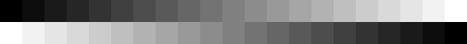

Archivio storico
La Batteria dello Chaberton
Una fortezza militare ex italiana a 3130 metri: visita virtuale a cura di Roberto Chirio.

La Batteria Chaberton finita di costruire nel 1910 alla sommità del Monte Chaberton, rappresentò sempre una minaccia per la Francia per via della sua posizione strategica dominante tutta la valle di Briançon.
Otto grandi torri costruite sulla sommità della montagna per ospitare
altrettanti cannoni da 149/35, puntati minacciosamente verso la Francia,
che hanno dato alla Batteria Chaberton l’aura e il fascino della fortezza
inespugnabile. Posta a 3.130 m. s.l.m., la fortificazione più alta
d’Europa attira oggi molti curiosi e appassionati escursionisti.
Chi transita in Valle Susa e in particolare verso Cesana, Sestriere e
Claviere, non può sfuggire la vista di quella maestosa costruzione sulla
sommità del monte Chaberton.
Molte Fortificazioni italiane come anche questa, sono divenute francesi per effetto del Trattato di Pace stipulato nel 1947.
Le fotografie
Su queste pagine troverete la documentazione fotografica sullo stato attuale della fortezza e delle opere militari collegate.
In queste pagine troverete la selezione delle immagini migliori e più significative, scattate da Roberto Chirio professionista dell’immagine digitale.
- Le fotografie recenti sono tutte in formato digitale.
- Le panoramiche sono realizzate con l’unione di sequenze di immagini singole.
- Tutte le fotografie sono state ottimizzate per la migliore visione nel web, con la minima occupazione di spazio per un veloce caricamento.
Per una corretta visione delle immagini portare il contrasto al massimo e regolare la luminosità dello schermo così da vedere distintamente tutta la scala di grigio.

Le sezioni dell’archivio
Nella sezione Storia troverete la sintesi dei fatti avvenuti durante e dopo la costruzione della Batteria dello Chaberton.
Nella sezione Fortificazioni troverete una serie di consigli per effettuare le escursioni in sicurezza e alcuni suggerimenti per fare fotografie e video all’interno dei bunker.
Mappa ed Escursione forniscono tutte le informazioni per raggiungere la Batteria dello Chaberton e le opere militari collegate.
Esplora la Batteria
Storia, opere militari e materiale fotografico.
Gallerie fotografiche e video
Sette gallerie d’archivio, oltre 160 fotografie e cinque video girati nel 1986.
- Batteria 2003 Interni, tunnel e torri — luglio e agosto 2003, 74 fotografie
- In volo con F. Gilardini Riprese aeree attorno alla batteria — 17 marzo 2007
- Forti di Briançon 30 dicembre 2004
- Foto 21 agosto 2004 Salita e opere in quota
- Cesana 1940–42 Per gentile concessione di Giacchino Gambetta
- Postazioni del Petit Vallon Le opere sul versante francese
- Postazioni al Colle dello Chaberton I centri di fuoco al colle
- Foto archivio Indice di tutte le gallerie
- Video d’archivio Cinque filmati girati fra luglio e settembre 1986
- Mappa del sito Tutte le pagine della sezione Chaberton